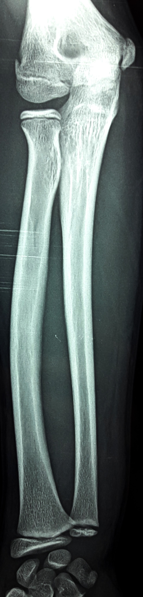
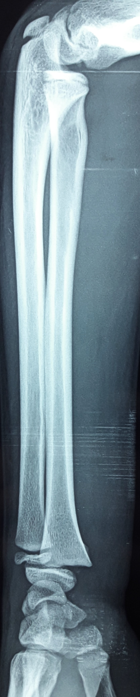

Scroll

Poignet
Cas clinique 1
Traumatisme fermé du poignet, chez un enfant de 12 ans, suite à une chute de sa hauteur sur la paume de la main.
L’examen a trouvé
une impotence fonctionnelle du membre supérieur gauche,
une déformation du poignet et
une douleur à la palpation de l’extrémité distale du radius.
La radiographie du poignet a montré: (fig1, fig2)
3. Quelle complication faut-il craindre pour ce type de fracture? R3

